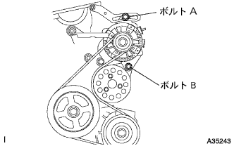

ウォータポンプASSY 取り付け |
| 1. ウォータ ポンプASSY取り付け |
 |
新品のガスケットを介して、ボルト３本およびナット２個でウォータポンプを取り付ける。
| 2. ウォータポンプ プーリ取り付け |
ＳＳＴを使用して、ウォータポンププーリを固定する。
 |
ボルト３本を締め付ける。
| 3. エンジンマウンティング インシュレータSUB-ASSY RH取り付け |
ボルト５本およびナットで、エンジンマウンティングインシュレータＲＨを取り付ける。
| 4. オルタネータASSY取り付け |
 |
固定用ボルトBでオルタネータを仮付けする。
 |
ボルトAおよびナットでファンベルトアジャスティングバーを仮付け後、オルタネータをシリンダブロック側に寄せてナットを本締めする。
コネクタおよびワイヤハーネスクランプを取り付ける。
ナットで+B端子ターミナルを取り付ける。
ターミナルキャップを取り付ける。
| 5. ファン ＆ オルタネータ Vベルト取り付け |
Vベルトを各プーリに仮付けする。
| 6. Vベルト張力·たわみ量点検 |
 |
ハブナットレンチまたはバーなどを使用して、オルタネータを車両フロント側に引いて、フアン & オルタネータVベルトの張力を調整する。
|  |
調整用ボルトAを締め付けてから、固定用ボルトBを締め付ける。
| 7. シリンダヘッド カバー NO.2取り付け |
 |
ナットA2個を締め付け後、ナットB2個でシリンダヘッドカバーNo.2を取り付ける。
| 8. 冷却液(トヨタ純正スーパーLLC)補充 |
ラジエータドレーンコツクプラグを閉じて、冷却水をラジエータ注入口よりあふれるまで注入する。［＊１］
ラジエータキヤツプを締める。
ラジエータリザーブタンクに冷却液を上限まで注入する。
エンジンをサーモスタツトが開弁するまで暖機する。
エンジンを止め、冷却液が冷えるまで待ち、ラジエータキヤツプをはずして水位を確認する。
水位が下がっている場合は、［＊１］より繰り返す。
水位が下がらなくなったら、ラジエータリザーバタンクの冷却液を調整する。
| 9. 冷却液(トヨタ純正スーパーLLC)漏れ点検 |
冷却液を満水にしてテスターを取り付ける。
137ｋＰａ｛1.4ｋｇｆ/ｃｍ２｝の圧力をかけ、各部に水漏れがないことを確認する。
| 10. エンジンアンダ カバー RH取り付け |
スクリュー2個およびボルト2本で、エンジンアンダーカバーRHを取り付ける。
ナットを、締め付ける。